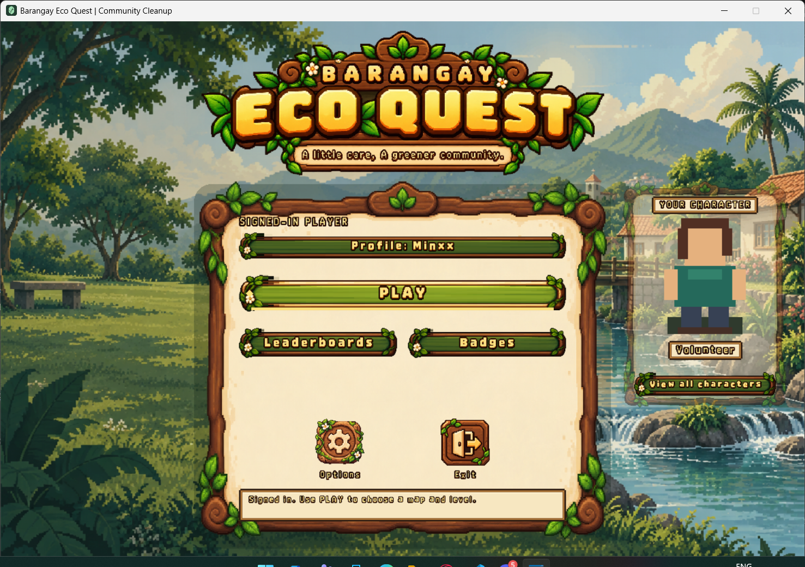

Actual game screenshot · View full size ↗
01 — GAME DEVELOPMENTPaid student commission
Barangay Eco Quest
An educational 2D game built with Python and Pygame for a student commission. A practical opportunity to turn an idea into a playable project.
My contribution Game development for the commissioned project.
Project notes
The purpose
Deliver an educational 2D game for a paid student commission.
The implementation
Python provides the programming foundation; Pygame provides the game development framework. This project applies my experience building games to a commissioned brief.